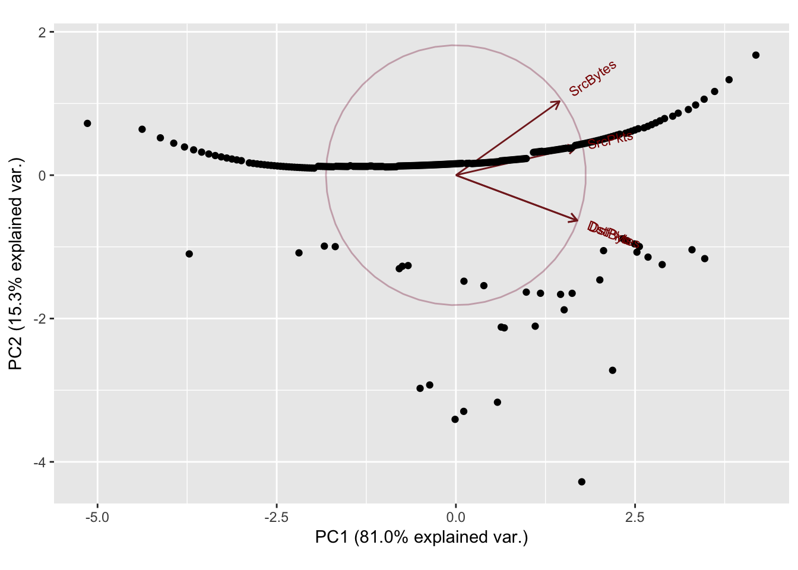

Chapter 4 Modeling Port Relationships
4.1 Motivation
Previous exploratory data analysis signaled that there may exist trends between different port combinations. For instance, a particular source and destination port may frequently contain large byte transactions in their connections. Devising a systematic way to identify these combinations may present outliers that can be further investigated for scanner behavior.
Beginning the investigation requires the creation of a 2-dimensional matrix of the most common source and destination port combinations. Each cell in this matrix is of variable length and holds all of the data observations involving that particular source and destination port pairing. Following the creation of this matrix, principal component analysis may be applied to the combinations present in each cell to investigate the behavior of that specific connection.
4.2 Principal Component Analysis
Principal component analysis represents data in terms of its principal components rather than relying on traditional Cartesian axes. Principal components contain the underlying structure in data by representing the directions that contain the most variance.
–>
4.2.1 Application
In this problem, Principal Component Anaylsis is applied to each source-destination port grouping of observed data to understand the underlying structure of the data partition’s continuous features: source bytes and packets and destination bytes and packets. In particular the amount of variance explained by the generated principal components and their relative directions will signal whether specific trends in connection behavior occur at certain ports, and whether the size of each of the continuous features affects port behavior as well as the other features.
4.3 Implementation
4.3.1 Ports Combination Matrix/Tensor
#set counts
s_num = 25
d_num = 25
combo_num = 20
#get top sport and dport values
Sport_table = table(Sport)
Sport_table = as.data.frame(Sport_table)
Sport_table = Sport_table[order(-Sport_table$Freq),]
top_Sport = (head(Sport_table$Sport, s_num))
Dport_table = table(Dport)
Dport_table = as.data.frame(Dport_table)
Dport_table = Dport_table[order(-Dport_table$Freq),]
top_Dport = (head(Dport_table$Dport, d_num))
#subset data for the combinations
argus_maxes = argus[is.element(Sport, top_Sport) & is.element(Dport, top_Dport), ]
argus_maxes = transform(argus_maxes,
Sport = as.numeric(as.character(Sport)),
Dport = as.numeric(as.character(Dport)))
max_combinations = as.data.frame(table(argus_maxes$Sport, argus_maxes$Dport))
top_combinations = head(max_combinations[order(-max_combinations$Freq),], combo_num)
top_combinations$Sport = top_combinations$Var1
top_combinations$Dport = top_combinations$Var2
top_combinations$Var1 = NULL
top_combinations$Var2 = NULL
top_combinations = transform(top_combinations,
Sport = as.numeric(as.character(Sport)),
Dport = as.numeric(as.character(Dport)))
#generate the combinations matrix of ports
extract_intersection = function(sport, dport){
argus_subset = argus[Sport == sport & Dport == dport,]
return (argus_subset)
}
generate_combinations_matrix = function(top_combinations){
n = dim(top_combinations)[1]
combinations = c()
for (i in 1:n){
sport = as.numeric(top_combinations[i,]$Sport)
dport = as.numeric(top_combinations[i,]$Dport)
combo = extract_intersection(sport, dport)
combinations = c(combinations, list(combo))
}
return (combinations)
}
combinations = generate_combinations_matrix(top_combinations)4.3.2 Investigating Combinations
#principal component analysis and visualizing results
pca_analysis = function(SrcBytes, SrcPkts, DstBytes, DstPkts){
pca_cont_vars = cbind(SrcBytes, SrcPkts, DstBytes, DstPkts)
pca = prcomp(pca_cont_vars, center = TRUE, scale. = TRUE)
print(pca$rotation)
print((summary(pca)))
#screeplot(pca, type="lines",col=3)
g = ggbiplot(pca, obs.scale = 1, var.scale = 1,
ellipse = TRUE,
circle = TRUE)
g = g + scale_color_discrete(name = '')
g = g + theme(legend.direction = 'horizontal',
legend.position = 'top')
print(g)
return(pca$rotation)
}
#apply pca to the data partitions on the top 10 port combinations
combo_num = 10
for (i in 1:combo_num){
combo_table = combinations[i]
combo_table = transform(combo_table,
SrcBytes = as.numeric(SrcBytes),
SrcPkts = as.numeric(SrcPkts),
DstBytes = as.numeric(DstBytes),
DstPkts = as.numeric(DstPkts))
cat("Sport:", combo_table$Sport[1],"\t")
cat("Dport:", combo_table$Dport[1],"\n")
SrcBytes_norm = nscore(combo_table$SrcBytes)$nscore
SrcPkts_norm = nscore(combo_table$SrcPkts)$nscore
DstBytes_norm = nscore(combo_table$DstBytes)$nscore
DstPkts_norm = nscore(combo_table$DstPkts)$nscore
pca_analysis(SrcBytes_norm, SrcPkts_norm, DstBytes_norm, DstPkts_norm)
}Sport: 32416 Dport: 9163
PC1 PC2 PC3 PC4
SrcBytes 0.4113308 -0.7246604 -0.5528760 0.001575730
SrcPkts 0.5054262 -0.3234250 0.7999554 0.003459252
DstBytes 0.5357591 0.4327433 -0.1665939 0.705649994
DstPkts 0.5369483 0.4277813 -0.1632360 -0.708550377
Importance of components:
PC1 PC2 PC3 PC4
Standard deviation 1.7118 0.8991 0.51065 0.02309
Proportion of Variance 0.7326 0.2021 0.06519 0.00013
Cumulative Proportion 0.7326 0.9347 0.99987 1.00000
Sport: 4145 Dport: 9119
PC1 PC2 PC3 PC4
SrcBytes 0.4333309 0.8902089 -0.1405308 0.001886624
SrcPkts 0.5213529 -0.1206221 0.8439979 0.036180840
DstBytes 0.5190742 -0.3165495 -0.3953966 0.688490995
DstPkts 0.5205549 -0.3045896 -0.3340362 -0.724339380
Importance of components:
PC1 PC2 PC3 PC4
Standard deviation 1.875 0.6538 0.23124 0.05551
Proportion of Variance 0.879 0.1069 0.01337 0.00077
Cumulative Proportion 0.879 0.9859 0.99923 1.00000
Sport: 19239 Dport: 9153
PC1 PC2 PC3 PC4
SrcBytes 0.4400190 0.8125062 -0.3823817 -0.001104223
SrcPkts 0.5189497 0.1174251 0.8466938 -0.003489750
DstBytes 0.5179403 -0.4057384 -0.2640886 -0.705245607
DstPkts 0.5184712 -0.4017728 -0.2591352 0.708953621
Importance of components:
PC1 PC2 PC3 PC4
Standard deviation 1.8418 0.7037 0.33316 0.03695
Proportion of Variance 0.8481 0.1238 0.02775 0.00034
Cumulative Proportion 0.8481 0.9719 0.99966 1.00000
Sport: 4243 Dport: 27
PC1 PC2 PC3 PC4
SrcBytes 0.3986539 0.8262979 -0.3978739 0.001762539
SrcPkts 0.5268775 0.1487193 0.8367993 0.007045781
DstBytes 0.5300998 -0.3876467 -0.2708012 0.703840168
DstPkts 0.5314785 -0.3805842 -0.2610173 -0.710321243
Importance of components:
PC1 PC2 PC3 PC4
Standard deviation 1.7727 0.8343 0.40033 0.03406
Proportion of Variance 0.7856 0.1740 0.04007 0.00029
Cumulative Proportion 0.7856 0.9596 0.99971 1.00000Sport: 4243 Dport: 10290
PC1 PC2 PC3 PC4
SrcBytes -0.4146349 0.86007431 -0.2972268 -0.002501828
SrcPkts -0.5225073 0.04229265 0.8514240 -0.016572825
DstBytes -0.5257892 -0.36545098 -0.3181251 -0.699133556
DstPkts -0.5278350 -0.35345310 -0.2924547 0.714794623
Importance of components:
PC1 PC2 PC3 PC4
Standard deviation 1.8125 0.7560 0.37528 0.05022
Proportion of Variance 0.8213 0.1429 0.03521 0.00063
Cumulative Proportion 0.8213 0.9642 0.99937 1.00000
Sport: 4243 Dport: 26
PC1 PC2 PC3 PC4
SrcBytes 0.4320683 0.87332152 -0.2249932 0.002131619
SrcPkts 0.5202875 -0.03769203 0.8529953 0.016712305
DstBytes 0.5202102 -0.34831316 -0.3463831 0.698625865
DstPkts 0.5215355 -0.33847715 -0.3190547 -0.715288791
Importance of components:
PC1 PC2 PC3 PC4
Standard deviation 1.8559 0.6797 0.30326 0.0398
Proportion of Variance 0.8611 0.1155 0.02299 0.0004
Cumulative Proportion 0.8611 0.9766 0.99960 1.0000
Sport: 4243 Dport: 25
PC1 PC2 PC3 PC4
SrcBytes 0.4278586 0.8931432 -0.1386797 -0.0005117289
SrcPkts 0.5214493 -0.1186010 0.8449812 -0.0055942005
DstBytes 0.5218835 -0.3078511 -0.3699338 -0.7042828114
DstPkts 0.5221736 -0.3057071 -0.3604494 0.7098972916
Importance of components:
PC1 PC2 PC3 PC4
Standard deviation 1.8651 0.6736 0.25860 0.02853
Proportion of Variance 0.8697 0.1134 0.01672 0.00020
Cumulative Proportion 0.8697 0.9831 0.99980 1.00000
Sport: 4243 Dport: 10282
PC1 PC2 PC3 PC4
SrcBytes 0.3952127 0.8082469 -0.4365116 0.001226653
SrcPkts 0.5292182 0.1880550 0.8273666 0.005281099
DstBytes 0.5303470 -0.3972687 -0.2534339 0.704755906
DstPkts 0.5314763 -0.3918544 -0.2463602 -0.709429149
Importance of components:
PC1 PC2 PC3 PC4
Standard deviation 1.7608 0.8629 0.39223 0.03300
Proportion of Variance 0.7751 0.1862 0.03846 0.00027
Cumulative Proportion 0.7751 0.9613 0.99973 1.00000
Sport: 19581 Dport: 118
PC1 PC2 PC3 PC4
SrcBytes 0.4978768 0.5190781 -0.69474927 0.0003069068
SrcPkts 0.5010460 0.4817043 0.71896568 -0.0014778396
DstBytes 0.5004716 -0.4999998 -0.01523225 -0.7066090712
DstPkts 0.5005994 -0.4985169 -0.01340796 0.7076025312
Importance of components:
PC1 PC2 PC3 PC4
Standard deviation 1.9145 0.56579 0.10402 0.06249
Proportion of Variance 0.9163 0.08003 0.00271 0.00098
Cumulative Proportion 0.9163 0.99632 0.99902 1.00000
Sport: 35506 Dport: 12
PC1 PC2 PC3 PC4
SrcBytes 0.4432713 0.7265363 0.5248198 -0.01482290
SrcPkts 0.5148990 0.2730712 -0.8122575 0.02343025
DstBytes 0.5185367 -0.4458439 0.1990667 0.70193688
DstPkts 0.5191429 -0.4458702 0.1586646 -0.71169932
Importance of components:
PC1 PC2 PC3 PC4
Standard deviation 1.80 0.7830 0.38006 0.05046
Proportion of Variance 0.81 0.1533 0.03611 0.00064
Cumulative Proportion 0.81 0.9633 0.99936 1.00000
4.3.3 Interpretation
In general the first two principal components explained most of the variance (~90%) for each of the port combinations. The scatterplots of the principal components show clear horizontal patterns in the 2nd principal component. This similar behavior, mirrored throughout the top 10 most frequent ports, may be caused by the high frequency of zeroes in the dataset. Recall, the first quartile of observations for destination bytes and packets were all 0. This high frequency of the same value (0) yields ties when performing the normal scores transformation applied to the data, which may also cause the horizontal behavior exhibited in every principal component analysis.